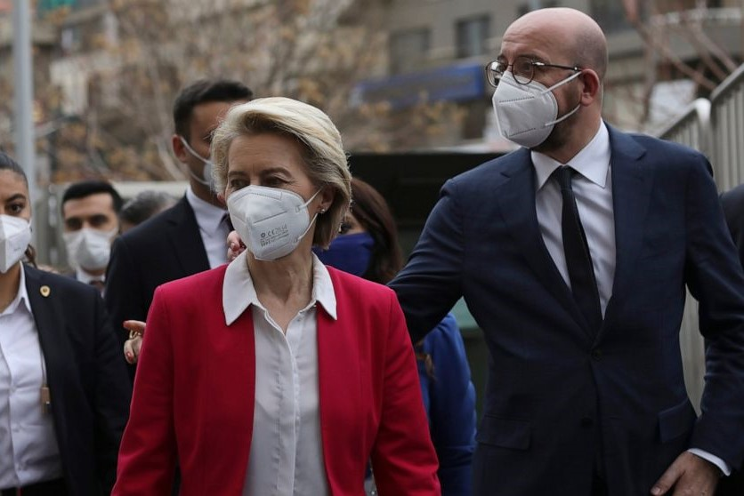

Turkey Rejects Claims of Sexist Snub Towards Von Der Leyen
ANKARA, Turkey (AP) — Turkey on Thursday strongly rejected accusations that it snubbed Ursula von der Leyen — one of the European Union’s most powerful executives — because of her gender after a protocol gaffe during a meeting at the Turkish presidential palace ignited a public uproar.
The affair also branched into a diplomatic spat between Turkey and Italy, whose prime minister compared the Turkish president to a dictator and spoke of von der Leyen's “humiliation.”
Von der Leyen — the European Commission president — and European Council chief Charles Michel met with Turkish President Recep Tayyip Erdogan for talks on Turkey-EU relations on Tuesday. The guests were led into a large room for discussions with Erdogan, but only two chairs had been set out in front of the EU and Turkish flags for the three leaders.
Von der Leyen stood looking at the men who took the chairs, expressing her astonishment with a “ehm” sound and a gesture of disappointment. She was later seen seated on a large beige sofa, away from her male counterparts
The images, also revealing a lack of unity among the two EU leaders. drew intense criticism on social media and accusations of gender discrimination.
Turkey insisted that the EU's own protocol requests were applied but the EU Council head of protocol said his team did not have access, during their preparatory inspection, to the room where the incident happened.
“If the room for the tete-a-tete had been visited, we should have suggested to our hosts that, as a courtesy, they replace the sofa with two armchairs for the president of the Commission," Dominique Marro wrote in a note made public by the EU Council. He added that the incident might have been prompted by the order of protocol established by the EU treaty.
“In general, the protocol for third countries makes a clear distinction between the status of head of state, held by the president of the European Council, and the status of prime minister, held by the president of the Commission," he said.
The embarrassing moment quickly became a hot topic well beyond Brussels.
Italian Premier Mario Draghi used strong words against Erdogan and decried the treatment von der Leyen got in Ankara as “inappropriate.”
“I was very displeased by the humiliation that President von der Leyen had to suffer,” Draghi replied Thursday evening in Rome after a reporter asked his opinion during a news conference.
Draghi added that “it’s that with these — let’s call them what they are — dictators, of whom, however, one has need, one must be frank in expressing differences of views, opinions, behavior, of visions of society....but also ready to collaborate, more to cooperate, to cooperate to ensure the interests of one’s country.”
Ankara responded by summoning the Italian ambassador to the Turkish Foreign Ministry over Draghi's comment, Turkey’s state-run Anadolu Agency reported.
“We strongly condemn ... the unacceptable populist rhetoric of the appointed Italian Prime Minister Draghi and his ugly, boundless statements about our elected president,” Foreign Minister Mevlut Cavusoglu wrote on Twitter.
Draghi took office as premier in February after the preceding government collapsed in a political squabble and the Italian president asked him to try to form a new coalition. By a wide margin, Draghi's government then won the required confirmation votes of confidence in Parliament.
Angry callers to Italian radio talk shows Thursday morning expressed indignation both at Erdogan’s choice of only two chairs as well as at Michel’s decision to go along with the arrangement.
EU commission chief spokesman Eric Mamer said on Wednesday that von der Leyen was “surprised" by the arrangements but “decided to proceed nevertheless, prioritizing substance over protocol."
The incident came only weeks after Erdogan pulled Turkey out of a key European convention aimed at combatting violence against women. The move was a blow to Turkey’s women’s rights movement, which says domestic violence and murders of women are on the rise. During her visit to Ankara, von der Leyen called for Erdogan to reverse his decision to withdraw from the Istanbul Convention — named after the Turkish city where it was signed in 2011.
Turkish Foreign Minister Mevlut Cavusoglu said Turkey had come under “extremely unfair” criticism over the visit and alleged slight shown to von der Leyen.
“Turkey is a deep-rooted state and this is not the first time that it has hosted a visitor,” Cavusoglu said. “The protocol applied during its (international) meetings is in line with international protocol rules as well as the world-renowned Turkish hospitality traditions.”
Cavusoglu insisted that Turkish and EU officials in charge of protocol had held meetings prior to the visit and that the arrangement was in line with EU requests. The Turkish minister added that he felt obliged to lay the blame on the EU publicly following accusations against Turkey from even “the highest levels of the EU.”
Michel took a long time to react, saying on Wednesday evening that the embarrassment was the result of the “strict interpretation” by Turkish services of protocol rules.
He regretted “the differentiated, even diminished, treatment of the president of the European Commission” and said photographs of the meeting gave the impression that he was “indifferent” to the situation. “Nothing could be further from the truth, or from my deeply held feelings – or indeed from the principles of respect which I hold so dear," he said.
“At the time, while realizing the regrettable nature of the situation, we decided not to make matters worse by creating a scene,” he said.
Mamer said the commission welcomed Michel's statement.
“It is very important that the European Union shows unity when it is dealing with third countries and partners," he said.
The EPP political group, the largest in the European Parliament, had a different analysis and called for a plenary debate on the trip to Turkey.
“The Ankara visit of Presidents von der Leyen and Michel should have been a message of firmness and unity of Europe’s approach to Turkey," group chairman Manfred Weber said in a statement. “Unfortunately it has resulted in a symbol of disunity as the presidents failed to stand together when it was needed. We expect more from Europe’s foreign policy.”
___
Petrequin reported from Brussels. Frances D'Emilio in Rome contributed to this story.